2026年度 後期 · 火曜1限 講義スライド解説 / 第1回
熱力学
第1回｜相図・相律とエネルギー保存則
資料判定：第1回への対応は推定（指定された「熱力学 第1回.txt」とPDFの話題・順序・終点が一致）。資料順は不明。出典：20261006 - 熱力学資料.pdf（全22ページ）。1ページ1枚、印字スライド番号がないためPDFページ番号で対応。口頭説明の具体例も反映し、原典を優先して誤認識を補正。
想定読了時間：約19〜22分。日本語毎分400〜600字を目安に数式・図の照合時間を加算。原PDFの熟読や計算の自力再現は含めない。過去問・演習未確認のため詳しさは内容上の必要性で暫定判断。
講義を通して言いたいこと
物質の相は温度と圧力で決まり、複数の相が共存するには平衡条件を満たす必要がある。一方、状態を変えるときのエネルギーは熱と仕事の両方で出入りするので、定容・定圧という実験条件に合わせて内部エネルギーやエンタルピーを使い分ける。この二つを結ぶ入口が、相図・相律と熱力学第1法則である。
授業の見通しと1.1：なぜ熱力学を使うか
この章の想定読了時間：約3分
解説 1
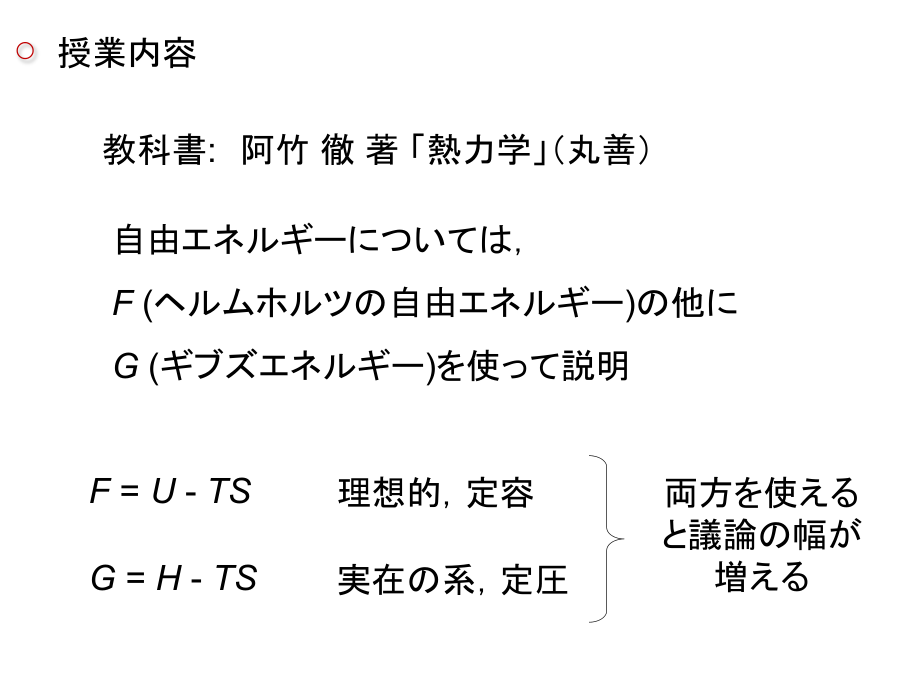
熱力学でいう系は、いま注目している物質や容器の中身で、それ以外を外界と呼ぶ。定容は系の体積が一定、定圧は圧力が一定という条件である。ここで登場するUは系の内部エネルギー、Tは絶対温度（単位K）、Sはエントロピー、Hはエンタルピーというエネルギー量である。エントロピーは状態を特徴づける量で、熱のやり取りや変化の向きの議論に使う。厳密な定義は今回の範囲外。エンタルピーの定義はp.20で説明する。
Fはヘルムホルツの自由エネルギー、Gはギブズエネルギー。補足として、物質が出入りせず、外から膨張以外の仕事を与えない通常の条件では、温度・体積一定ならF、温度・圧力一定ならGが減る向きに自発変化を判定する。「どんな条件でも内部エネルギーが低下する」とは考えない。文字起こし冒頭の「エネルギーが下がる方向」という説明は、固定条件に合う自由エネルギーについて読む。
PDFの「理想的，定容／実在の系，定圧」は授業での使い分けの案内であり、Fが理想気体専用という意味ではない。口頭説明の密閉された剛体容器・ボンブは定容の例、大気圧下の反応は定圧の例である。教科書はPDFに明示された阿竹徹著『熱力学』（丸善）。
解説 2
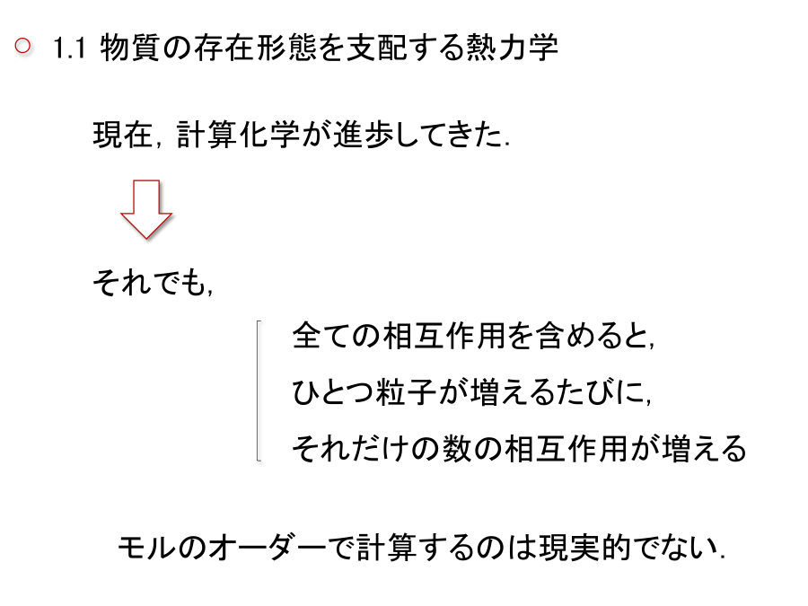
モルは物質量の単位で、1 molには約6.0×1023個の粒子がある。仮に全粒子対の相互作用を数えると、粒子数Nに対してN(N-1)/2組になり、1粒子追加するだけでN組増える。粒子間の相互作用とは、互いに及ぼす力やそれに対応するエネルギーのことである。
熱力学は、この膨大な運動を一つずつ解かず、温度・圧力などの全体量から可能な状態を議論する。優先度低・概要でよい：計算化学の計算量評価が目的ではなく、次のページの「記述する尺度の違い」を理解するための導入だからである。
図の左は孤立分子、右は多数の分子の集合体。量子力学は微視的な状態を、解析力学は古典的な運動を扱う。統計力学は多数の微視的状態と全体の性質を結び、熱力学は温度・圧力・体積などのマクロ物性、つまり物質全体として測れる性質を記述する。
相とは、物質の状態や性質が一様な部分で、固相・液相・気相などをいう。相転移は相が変わる現象。口頭説明の「水が氷になる」例では、分子1個の性質だけでなく、集合体としてどの状態が安定かを問う。図の両向き矢印は記述同士の関係を示し、孤立分子が自動的に集合体へ変化するという意味ではない。
1.2：相図・臨界点とボンベの中身
この章の想定読了時間：約4〜5分
解説 4
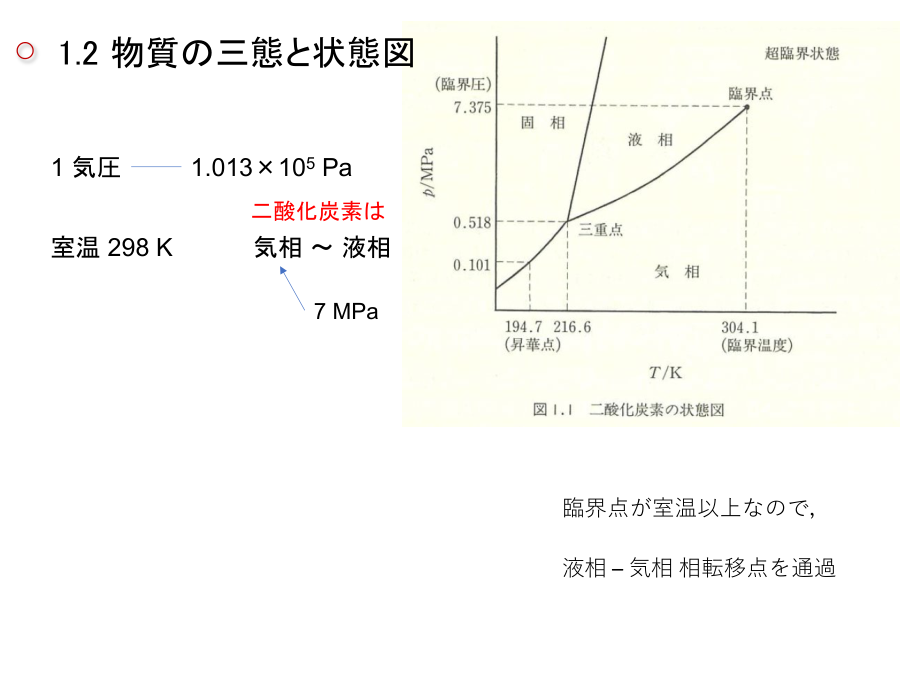
相図（状態図）は、条件に応じて安定な相を示す図。横軸はT（K）、縦軸は圧力p（MPa）。1 MPa=106 Paなので、1気圧は図上では約0.101 MPaである。一定圧力で加熱するなら右へ、一定温度で圧縮するなら上へ進む。境界線上では隣接する二つの相が平衡で共存する。
図の三重点は固体・液体・気体が共存する点で、CO₂では216.6 K、0.518 MPaと表示されている。1気圧はその圧力より低いので、加熱したドライアイスは液体を経ずに気体になる。これを昇華という。対して授業で採る室温298 Kでは、加圧により気液境界を横切って液化できる。
臨界点は液体と気体の共存線が終わる点。図のCO₂の臨界温度304.1 Kは室温より高い。原典の「7 MPa」は授業の概略値として扱い、298 Kでの厳密な境界圧力と断定しない。口頭説明のbarとの比較は、1 bar=105 Paで1気圧とは少し異なる、という単位の補足に限って採用する。
解説 5
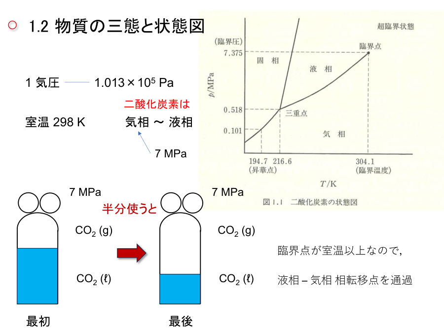
追加されたボンベ図は、上が気体、青い下部が液体。気体を取り出すと液体の一部が気化し、液面は下がるが気液共存が保たれる。温度が同じで十分に平衡へ戻れば、圧力はその温度での共存圧力に戻る。そのため「半分使ったら圧力も半分」という推測はできない。
図の「最後」も液体が残っており、使い切った状態ではない。液体がなくなった後はこの説明が変わる。口頭説明では、使用中のボンベを横にすると出口へ液体が入り得ることも具体例にしている。図は相の配置と残量・圧力の関係を理解するための模式図である。
解説 6
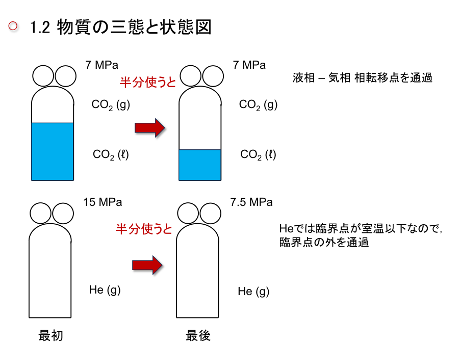
上段はp.5の復習、下段にHeの比較が加わる。Heの臨界温度は室温より低いため、室温のまま加圧しても液体と気体の境界線を横切らない。高密度へ連続的に変わり得るが、CO₂のように液体の気化が圧力を維持する状況にはならない。
補足として、理想気体とはpV=nRTを満たす気体のモデル。Vは体積、nは物質量（mol）、Rは気体定数である。一定温度・一定容積でこのモデルを使えばp∝ nとなり、半分取り出すと15 MPaから7.5 MPaになる。高圧の実在気体での厳密な比例を保証する図ではない。また、臨界温度を超えているだけで常に超臨界状態と呼ぶのではなく、超臨界状態は臨界圧力も超えた領域をいう。
解説 7
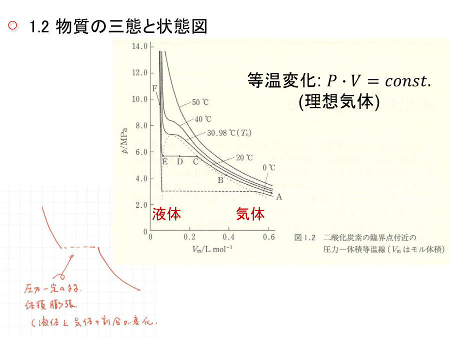
横軸Vmはモル体積V/nで、単位はL mol-1。縦軸は圧力。各曲線は温度一定の等温線である。理想気体なら、同じ物質量と温度についてpV=一定なので、体積を増やすと圧力が滑らかに下がる。
図の20 ℃の線は、右の気体側から圧縮するとCで液化が始まり、C〜Eの水平区間では圧力をほぼ一定に保ったまま気体の割合が減る。Eより左ではほぼ液体となり、少し圧縮するだけでも圧力が大きく上がる。逆に左から膨張させれば、水平区間で液体の割合が減って気体が増える。水平線は「一つの気体相が理想気体則に反している」のではなく、二相の比率が変化している区間である。
臨界温度より高い40 ℃・50 ℃の曲線では、この共存の水平区間がなくなる。左下の手書き図も、圧力一定のまま体積が変わる点を強調している。口頭説明の「等温で圧力一定のまま膨張する」は、この二相共存区間について読む。
1.3：相律と共存条件
この章の想定読了時間：約3分
解説 8
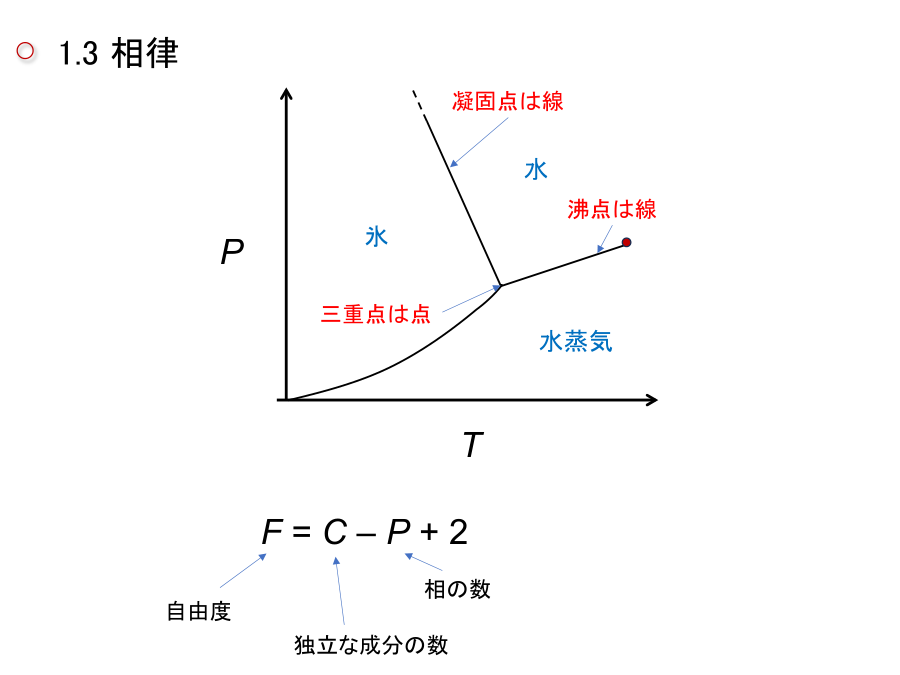
自由度は、共存する相を変えずに独立に指定できる強度変数の数。強度変数とは温度・圧力のように、試料を倍にしても値が倍にならない量である。相律では、独立な成分の数をC、相の数をPとして
と書く。この式の\(F\)は自由度で、p.1の自由エネルギー\(F\)とは別物。\(P\)も圧力ではなく相数である。 混同を避け、以下の補足では自由度をf、相数をr、圧力をpと書く。成分は組成を独立に表すために必要な物質で、純粋な水なら氷・水・水蒸気を合わせても成分数は1。
原典の水の図は定性的な模式図で、二相共存を線、三相共存を点として示す。氷と水の境界が負の傾きを持つことも読み取れる。口頭説明ではCO₂との傾きの違いに触れるが、その導出は後続内容なのでここでは図の特徴の確認にとどめる。
解説 9
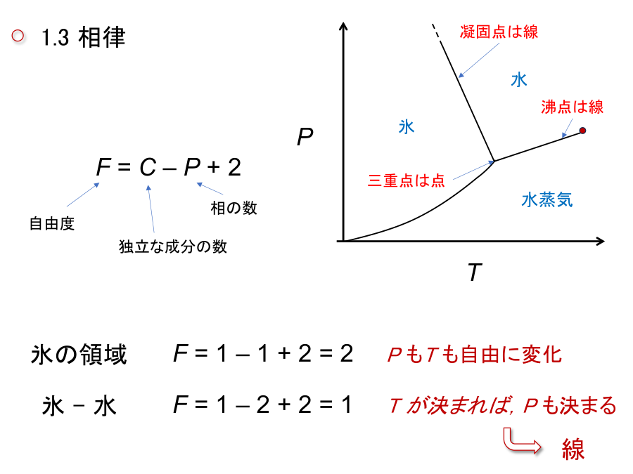
純水なのでC=1。氷だけの領域ではf=1-1+2=2となり、同じ相の領域内なら温度と圧力を独立に変えられる。氷と水が共存する線ではf=1-2+2=1。例えば温度を決めると共存できる圧力も決まり、任意の圧力をさらに選ぶことはできない。
図中の三重点にも同じ計算を適用するとf=1-3+2=0で、三相共存の温度・圧力は固定される。ただし相の量や割合まで相律で決まるわけではない。問題では「成分数→相数→自由度→図の領域・線・点」の順に確認する。文字起こしの例でも、温度・圧力・体積を三つとも自由に選べないことが強調されている。体積は物質量や状態方程式とも関係するためである。
解説 10
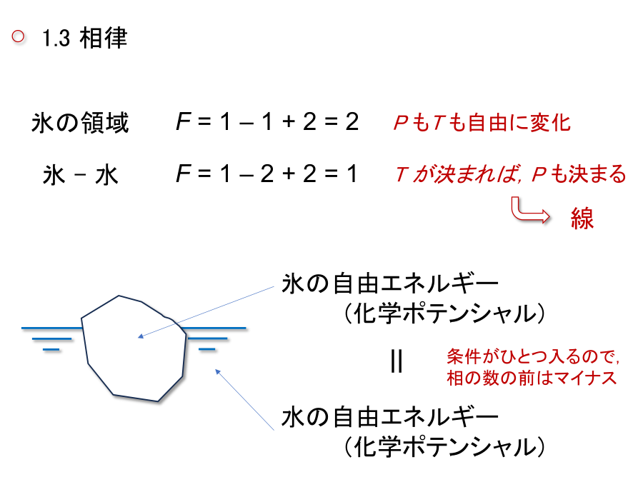
水の中の氷を描いた図では、二相の間で水分子が移っても一方が一方的に増えない条件を考える。化学ポテンシャルμは、その成分をわずかに加えたときのギブズエネルギーの増え方で、純物質の一相ではモル当たりのギブズエネルギーG/nに等しい。同じ温度・圧力での共存条件は
この等式が温度と圧力に一つの制約を課すので、自由度が2から1へ減る。原典の「氷の自由エネルギー＝水の自由エネルギー」は、括弧にある化学ポテンシャル、つまり量をそろえた比較として読む。氷と水の総量が違えば、全体のG自体が等しい必要はない。口頭説明の「物質量で割って比較する」がこの点を補っている。相律全体の一般的な導出は今回の資料の範囲外。
2.1前半：熱の移動と第1法則
この章の想定読了時間：約4分
温度TA>TBのブロックAとBを接触させ、最終温度をTFとする。熱は温度差に伴って移動するエネルギーであり、熱平衡は接触させても正味の熱移動が起きない状態。CA,CBはそれぞれの熱容量で、温度を1 K上げるのに必要な熱量を表す。外へ熱が逃げず、相変化や無視できない仕事がなければ、最終温度は二つの初期温度の間に来る。
第0法則は「AとCが熱平衡、BとCも熱平衡なら、AとBも熱平衡」という関係であり、共通の温度を定義できる根拠になる。補足として、高温側から低温側へ自発的に熱が流れる向きは第2法則に関わる内容で、第0法則だけから決まるわけではない。図の矢印と、第0法則の記述の役割を分けて読む。
解説 12
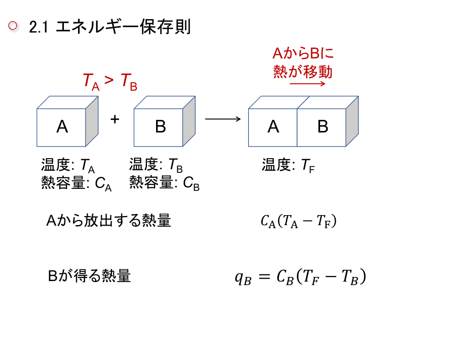
熱容量をこの温度範囲で一定とみなすと、Aから出た熱の大きさはCA(TA-TF)、Bが受け取った熱はqB=CB(TF-TB)。どちらも正の大きさとして書かれている。qは熱量で、CをJ K-1、温度差をKで入れれば熱量はJとなる。
計算では「出た量の大きさ」を使うか、「系へ入った向きを正」とするかを最初に決める。温度によって熱容量が大きく変わる場合は単純な積でなくq=∫ C(T) dTを使う。このページの式は一定熱容量の近似である。
解説 13
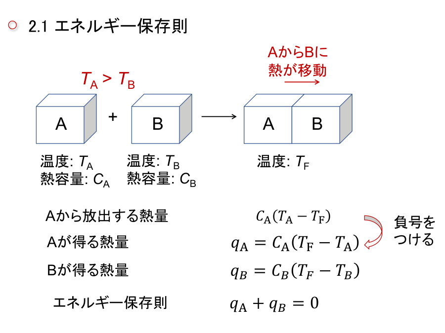
Aが受け取った熱はqA=CA(TF-TA)<0。Aは熱を失うので負になる。一方、BはqB>0。A+B全体が外部へ熱を逃がさず、仕事を無視できるなら
補足として整理すると、TF=(CATA+CBTB)/(CA+CB)。最終温度は熱容量で重みをつけた平均であり、単純な平均になるのはCA=CBのときだけ。口頭説明の符号の言い直しも、この「入る向きを正にそろえる」という理解にまとめられる。
解説 14
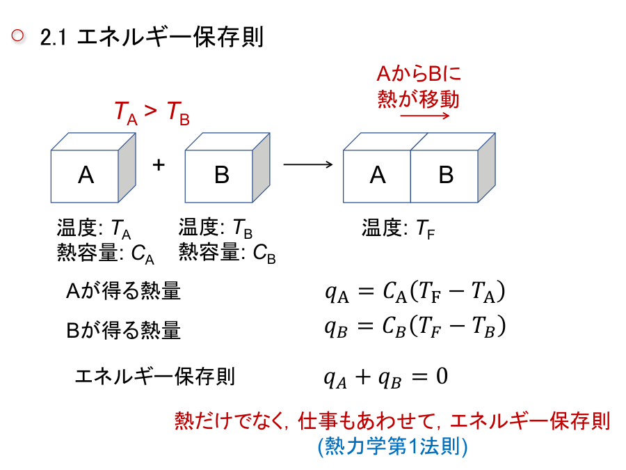
ここまでの熱収支に「仕事も合わせる」という視点が加わる。仕事は、力による変位や電気的作用などを通じたエネルギー移動である。口頭説明の例では、加熱された物体が膨張すると外へ仕事をするため、入った熱のすべてが物体の内部に残るとは限らない。
したがってqA+qB=0は特定の熱交換モデルの式。一般のエネルギー保存は、次のΔ U=q+wで扱う。
解説 15
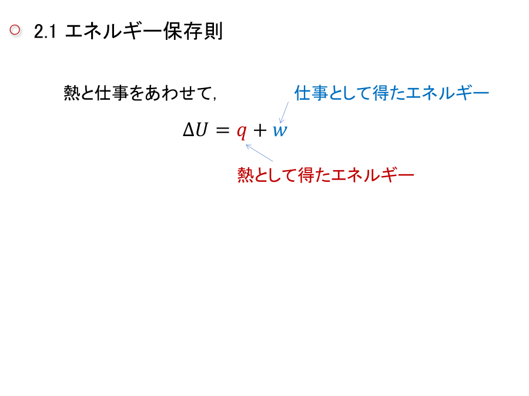
この授業では、qは熱として系が受け取ったエネルギー、wは仕事として系が受け取ったエネルギー。例えば熱を100 J受け取り、外へ仕事を30 Jしたならq=100 J、w=-30 Jで、Δ U=70 J。
文字起こしでも触れているように、教科書によっては外へした仕事を正に定義する。その場合のΔ U=q-Wとは記号の約束が違うだけなので、式だけを混ぜず「系が受け取る／外へする」を確認する。
孤立系は外界と物質もエネルギーも交換しない系。熱も仕事も境界を通らないためq=w=0で、p.15よりΔ U=0となる。これがここで示された第1法則の表現である。
孤立したA+B全体でAからBへ熱が移っても、AとBそれぞれの内部エネルギーは変わり得る。「全体が一定」と「各部分が一定」を区別する。また、物質が出入りしない閉じた容器でも、加熱できるなら孤立系ではない。
2.1後半：膨張仕事・熱容量・エンタルピー
この章の想定読了時間：約5〜6分
解説 17
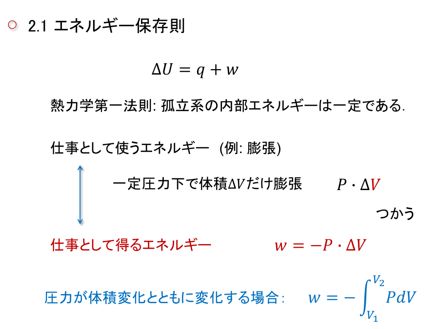
Δ V=V2-V1とすると、外圧一定の膨張仕事はw=-pextΔ V。pextは系が押し返す外界の圧力である。膨張ではΔ V>0なのでw<0、圧縮では逆にw>0。圧力の単位Paと体積の単位m3を掛けるとJになる。
外圧が変わる場合は
PDFでは圧力をPとだけ書くが、補足として一般には外圧を積分する。系の圧力をそのまま代入できるのは、機械的平衡を保つ可逆な極限などで両者を対応させられる場合。この条件が次の導出で必要になる。
解説 18
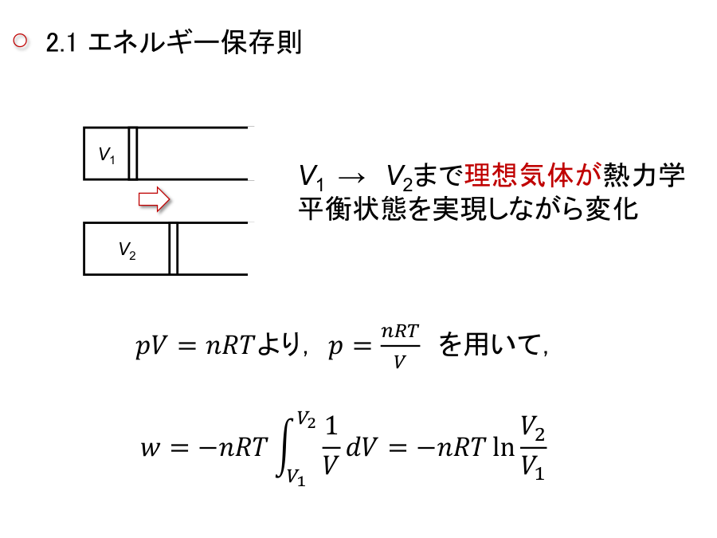
ピストン図では、体積V1からV2へ膨張する。理想気体の状態方程式p=nRT/Vを仕事の積分に代入する。物質量一定、温度一定、機械的平衡を保つ可逆な極限を仮定すれば
lnは自然対数。温度一定だからnRTを積分の外へ出せる。対数の中は体積同士の比で無次元でなければならない。V2>V1なら対数が正でw<0、圧縮では逆、という符号の確認ができる。
PDF本文には「平衡状態を実現しながら」とあるが、等温条件は明記されていない。口頭説明の「温度が変化しない条件なら外へ出せる」「断熱なら外へ出せない」を採用して補った。断熱は熱が出入りしないq=0という条件で、温度一定という意味ではない。さらに外圧ゼロでの自由膨張はw=0であり、この対数式を当てはめない。
解説 19
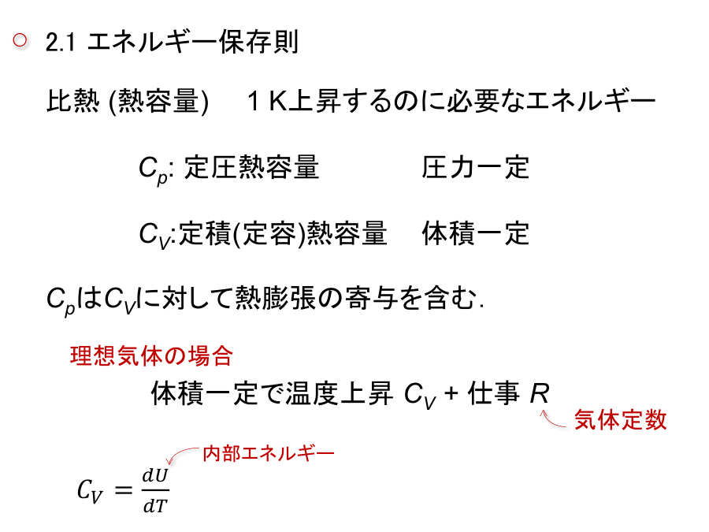
定容熱容量CVは体積一定、定圧熱容量Cpは圧力一定での熱容量。物質量一定で膨張仕事だけを考えるなら、定容ではw=0なのでqV=Δ U。したがって
偏微分∂は他の指定変数を固定して変化率を見る記号で、下付きのV,nが固定条件を表す。PDFのdU/dTにはこの条件を補って読む。定圧では加熱に伴う膨張で外へ仕事をするため、理想気体では同じ温度上昇により多くの熱が必要になる。
原典の「仕事R」は、理想気体1 molの温度を1 K上げるときの膨張仕事の大きさに対応する熱容量の寄与である。任意の試料で仕事そのものが常にRになるわけではない。
解説 20
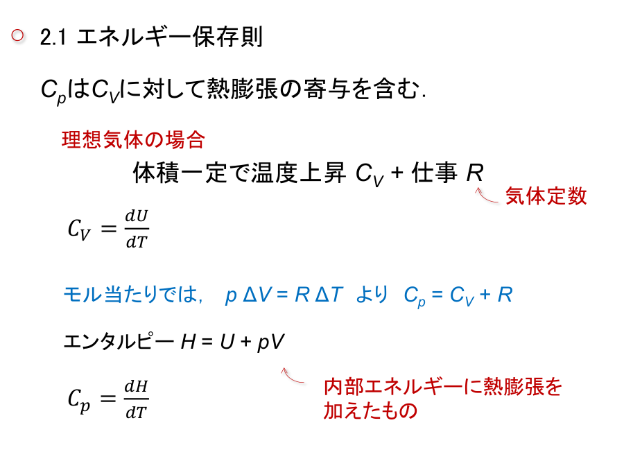
エンタルピーの定義はH=U+pV。物質量一定、圧力一定、外圧と系の圧力が対応し、仕事が膨張仕事だけなら、第1法則よりΔ U=qp-pΔ V。一方、Δ H=Δ U+pΔ Vなのでqp=Δ Hとなる。よって
原典の「内部エネルギーに熱膨張を加えたもの」は定圧での使い方を表す案内であり、一般の定義はU+pV。圧力が変わるならHの変化にはpの変化の寄与もある。
理想気体ではH=U+nRTで、Uは温度だけの関数になるため、試料全体の熱容量はCp-CV=nR。モル熱容量Cp,m=Cp/n、CV,m=CV/nに直すと
PDFのCp=CV+Rは明示された「モル当たり」の式として読む。口頭説明でも、モル当たりという前提が省略される場合に注意するよう述べている。実在気体一般へこの差をそのまま適用しない。
解説 21
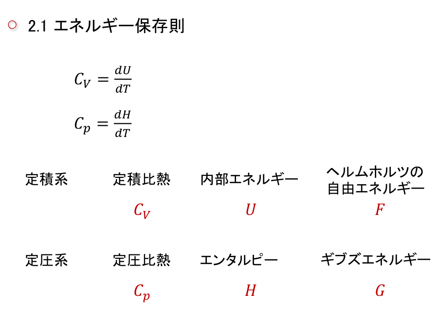
| 固定条件 | 熱容量 | 膨張仕事のみの場合の熱 | 自発変化の判定に使う量 |
|---|---|---|---|
| 体積一定 | CV | qV=Δ U | 温度も一定ならF=U-TS |
| 圧力一定 | Cp | qp=Δ H | 温度も一定ならG=H-TS |
表の最右列にはp.1の物質の出入り・仕事に関する条件も適用する。「一定体積」だけではF減少を、「一定圧力」だけではG減少を判断できない。問題を読み始めるとき、どの条件が固定され、熱を内部エネルギーとエンタルピーのどちらへ対応させられるかを確認する。
解説 22
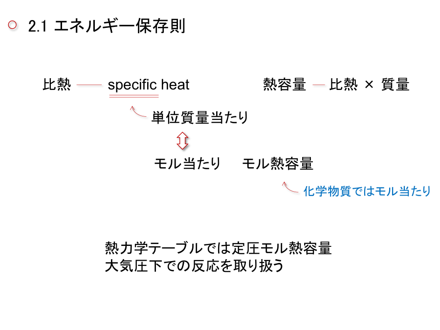
| 量 | 記号（補足） | 単位 | 試料全体との関係 |
|---|---|---|---|
| 熱容量 | C | J K-1 | 試料全体 |
| 比熱：単位質量当たりの熱容量 | c | J kg-1 K-1 | C=mc |
| モル熱容量 | Cm | J mol-1 K-1 | C=nCm |
mは質量。熱容量一定の範囲なら、対応する条件でq=CΔ T=mcΔ T=nCmΔ T。質量をgで使う表では比熱の単位もJ g-1 K-1へそろえる。温度差はKと℃で数値が同じだが、状態方程式や自由エネルギーのTには絶対温度を使う。
PDFでは化学物質の表は定圧モル熱容量をよく用いると説明し、口頭説明では大気圧下の実験や定容のボンブ実験を対比している。表を見るときはpかVか、モル当たりか試料全体かを単位と一緒に確認する。文字起こしの終盤もここで第1回を終え、次回に2章の残りへ進むという案内になっている。